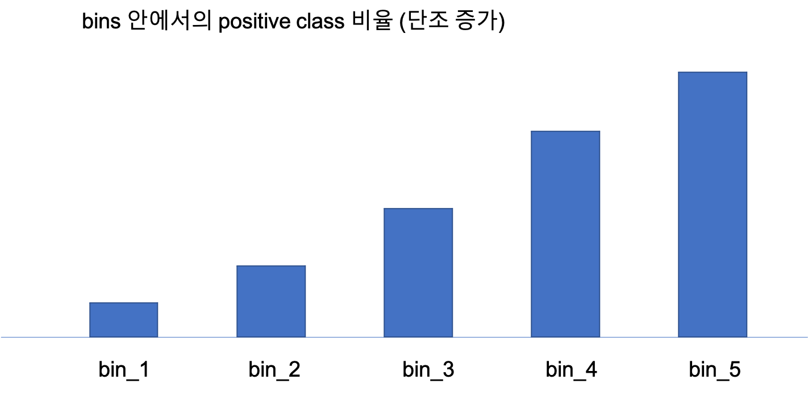
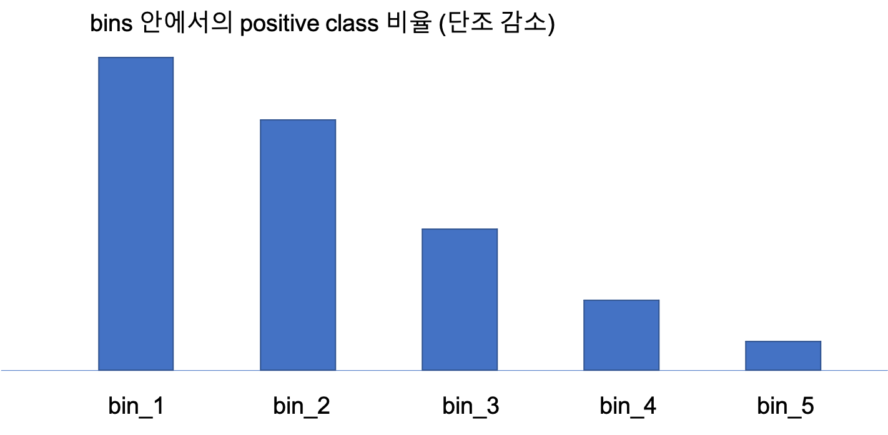

스코어카드와 최적 비닝
다룰 이야기
앞서 비닝에 대해서 다루었다. 특히 dlookr 패키지로 연속형 변수를 비닝하는 여러 솔루션을 다루었다.
금융권에서 사용하는 스코어카드(scorecard) 기법에서는 연속형 변수를 범주형 변수로 변환하는 작업을 빈번히 사용한다. 이번에는 일반적인 비닝 방법이 아닌 최적 비닝(optimal binning) 방법을 사용한다.
dlookr 패키지에는 일반적인 비닝과 스코어카드 모델(Scorecard modeling)을 위한 최적 비닝 기능을 지원한다. 여기서는 최적 비닝의 개념과 최적 비닝을 수행하고, 비닝 결과의 성능을 검증하는 방법을 다룬다.
최적 비닝(optimal binning)
최적 비닝은 비닝하고자 하는 연속형 변수(indicator)를 비닝할 때, 이진 클래스(binary class)의 종속 변수(target variable)를 고려한다. 즉, 이진분류(binary classification predict) 모델을 적용한다. 쉽게 말하자면 종속 변수의 positive 클래스의 예측력이 높은 수준(levels, 범주)과 그렇지 않은 수준으로 비닝한다. 이때 범주화(이산화)된 결과는 순서형 범주, 즉 ordered factor가 된다.
이산화된 범주의 수준(여기서는 bins)의 positive 클래스 예측력은 단조 증감 추세(monotonic trend)를 가져야 한다. 즉, ordered factor로 표현된 bins의 순서대로 예측력이 단조증가(monotonic increase) 하거나 단조감소(monotonic decrease)해야 한다. 정확히 말하자면 뒤에서 다룰 WoE가 단조 증감추세를 가져야 한다.
- 단조 증가 사례

- 단조 감소 사례

데이터
데이터 준비
kaggle의 https://www.kaggle.com/tug004/breast-cancer-dataset에 breast_cancer.csv는 유방암 진단 데이터를 제공한다. 이 데이터로 스코어카드의 기초 측도(measures)와 최적 비닝을 살펴 본다.
먼저 데이터를 다운로드한 후 R로 가져오자.
library(dplyr)
library(dlookr)
fname <- "breast_cancer.csv"
read.csv(fname) %>%
select(-X) -> breast_cancer 데이터 진단
breast_cancer %>%
diagnose() %>%
as.data.frame()## variables types missing_count missing_percent unique_count
## 1 id integer 0 0 569
## 2 diagnosis character 0 0 2
## 3 radius_mean numeric 0 0 456
## 4 texture_mean numeric 0 0 479
## 5 perimeter_mean numeric 0 0 522
## 6 area_mean numeric 0 0 539
## 7 smoothness_mean numeric 0 0 474
## 8 compactness_mean numeric 0 0 537
## 9 concavity_mean numeric 0 0 537
## 10 concave.points_mean numeric 0 0 542
## 11 symmetry_mean numeric 0 0 432
## 12 fractal_dimension_mean numeric 0 0 499
## 13 radius_se numeric 0 0 540
## 14 texture_se numeric 0 0 519
## 15 perimeter_se numeric 0 0 533
## 16 area_se numeric 0 0 528
## 17 smoothness_se numeric 0 0 547
## 18 compactness_se numeric 0 0 541
## 19 concavity_se numeric 0 0 533
## 20 concave.points_se numeric 0 0 507
## 21 symmetry_se numeric 0 0 498
## 22 fractal_dimension_se numeric 0 0 545
## 23 radius_worst numeric 0 0 457
## 24 texture_worst numeric 0 0 511
## 25 perimeter_worst numeric 0 0 514
## 26 area_worst numeric 0 0 544
## 27 smoothness_worst numeric 0 0 411
## 28 compactness_worst numeric 0 0 529
## 29 concavity_worst numeric 0 0 539
## 30 concave.points_worst numeric 0 0 492
## 31 symmetry_worst numeric 0 0 500
## 32 fractal_dimension_worst numeric 0 0 535
## unique_rate
## 1 1.000000000
## 2 0.003514938
## 3 0.801405975
## 4 0.841827768
## 5 0.917398946
## 6 0.947275923
## 7 0.833040422
## 8 0.943760984
## 9 0.943760984
## 10 0.952548330
## 11 0.759226714
## 12 0.876977153
## 13 0.949033392
## 14 0.912126538
## 15 0.936731107
## 16 0.927943761
## 17 0.961335677
## 18 0.950790861
## 19 0.936731107
## 20 0.891036907
## 21 0.875219684
## 22 0.957820738
## 23 0.803163445
## 24 0.898066784
## 25 0.903339192
## 26 0.956063269
## 27 0.722319859
## 28 0.929701230
## 29 0.947275923
## 30 0.864674868
## 31 0.878734622
## 32 0.940246046데이터를 진단할 결과를 보면 결측치도 없고, 연속형 변수의 중복값도 많지 않고, 대체적으로 양호하다.
종속변수
diagnosis는 종속변수다. B는 benign(양성 종양), M는 malignant(악성 종양)을 의미한다. positive를 malignant(악성 종양)인 M으로 negative를 benign(양성 종양)인 B로 정의하고 이야기를 풀어 나간다.
table(breast_cancer$diagnosis)##
## B M
## 357 212스코어카드 개념
스코어카드 모델에서는 모델링으로 만들어진 최종 스코어를 비닝한 등급으로 모델의 성능을 평가한다. 이 과정이 최적 비닝과 유사하고, 그 성능 평가 지표도 동일하기에 모델의 성능을 평가하는 방법에 국한해서 설명한다. (스코어카드 모델링은 다루지는 않는다.)
준비
먼저 관점의 정리가 필요하다. 역학 분석에 응용되는 사례-대조 연구(case-control studies)에서 사례군(case)은 보통 환자를 의미한다. 대조군은 환자가 아닌 군을 의미한다. 흡연이 폐암에 미치는 영향을 분석할 때 다음과 같은 분할표를 만들 수 있다.
| 폐암발생 | 폐암 미발생 | |
|---|---|---|
| 흡연 | a | b |
| 비흡연 | c | d |
이것을 이진분류로 바라보면 폐암 발생여부는 예측하려는 변수인 종속변수(target variable)고, 흡연 여부는 종속변수를 설명하는 예측변수(predictor variable)다. 폐암발생 여부가 관심사이고, 이를 예측하려는 모델이므로 폐암발생은 positive, 폐암 미발생은 negative 클래스다. 즉, 관심 대상이 되는 클래스가 positive 클래스다.
만약 환경과 질병의 인과관계를 규명하는 연구에서는 질병발생이 positive 클래스이고 질병 미발생이 negative 클래스일 것이다. 그러나 신약의 효과 규명하는 연구에서는 완치가 positive 클래스이고 미완치가 negative 클래스일 것이다. 즉, positive와 negative는 좋고 나쁨, 우열의 관계는 아니다. 간혹 positive와 negative를 양성과 음성으로 번역하여 표현하는 경우도 있으나, 개인적으로 마음에 들지 않아 그냥 포지티브(positive)와 네거티브(negative)라 칭하고 있다.
연체여부, 부도여부 등을 설명하는 스코어카드도 종속변수와 예측변수로 일반화할 수 있다. 개념은 동일하다. 그러나 필드에서 부르는 클래스의 용어가 다르다. 그래서 용어가 어느 정도 혼란을 줄 수도 있겠다.
질병 발생과 같은 의료분야 연구나, 연체, 부도와 같은 신용평점 모델에서의 종속변수의 클래스를 표현하는 용어는 positive 클래스, negative 클래스 보다는 good(우량), bad(불량)과 같은 표현을 한다. 폐암발생, 연체, 부도는 bad(불량)로 폐암 미발생, 연체 미발생은 good(우량)으로 표현한다. 관점(관심 대상이 되는 클래스)을 어떻게 보느냐에 따라 달라질 수 있는 여지가 없다.
최적비닝 수행
dlookr에서는 최적 비닝에서 이진 클래스를 good(우량), bad(불량)으로 부르지 않고, positive와 negative로 칭한다. 그러므로 스코어카드에 익숙한 사용자는 positive를 good(우량)으로, negative를 bad(불량)으로 생각하면 될 것이다. 그래서 이 글에서는 편의상
양성종양을우량으로,악성종양은불량으로 부른다. 그러므로 양성종양을 관심 클래스로 보고, 양성종양을 positive, 악성종양을 negative로 클래스로 보자.
스코어카드 개념을 살펴보기 위해서 먼저 dlookr 패키지로 유방암 데이터 중에서 종양의 반지름 평균인 radius_mean 변수를 최적비닝해 보자. 유방암 데이터는 여러 관측 측도로 악성 종양을 예측하는 사례의 데이터이므로 종속변수인 diagnosis를 고려해서 예측변수 radius_mean를 최적 비닝한다.
다음은 dlookr의 binning_by() 함수로 최적비닝을 수행한다. dlookr의 binning_by() 함수는 종속 변수가 0과 1의 두가지로 코딩된 경우에 동작한다. positive 클래스가 1, negative 클래스가 0이어야 한다. 그러나 factor일 경우에는 자동으로 변환하여 비닝을 수행한다. 메시지를 보면 악성종양(M)이 1, 양성종양(B)이 0으로 변환되었다.
breast_cancer %>%
binning_by(diagnosis, radius_mean) -> bin_radius_mean## Warning in binning_by(., diagnosis, radius_mean): The character y has been changed to a numeric vector consisting of 0 and 1.
## 'M' changed to 1 (positive) and 'B' changed to 0 (negative).비닝을 통해서 연속형 변수가 5개 수준을 갖는 범주형 변수로 변환되었다.
bin_radius_mean## binned type: optimal
## number of bins: 5
## x
## [6.98,11.8] (11.8,13.1] (13.1,15] (15,16.8] (16.8,28.1]
## 150 115 132 54 118분석하려는 관점이 다를 경우는 변수를 변환해서 사용해야 한다. 양성종양을 positive, 악성종양을 negative로 클래스로 보기로 했으므로, positive를 good(우량)으로, negative를 bad(불량)으로 정의하기 위해서 diagnosis_new이라는 파생변수를 만들어 최적 비닝을 수행한다.
breast_cancer %>%
mutate(diagnosis_new = ifelse(diagnosis == 'M', 0, 1)) %>%
binning_by(diagnosis_new, radius_mean) -> bin_radius_meanpositive 클래스와 negative 클래스가 바뀌어도 결과는 동일하다.
최적비닝만을 목적으로 한다면, 굳이 클래스를 변환하지 않더라도 비닝된 결과는 동일하므로 이진 factor일 경우에는 함수가 자동으로 0과 1로 변환하도록 해도 무방하다. 즉, 최적 비닝을 수행하는 용도라면 positive 클래스와 negative 클래스를 고민할 필요가 없다.
bin_radius_mean## binned type: optimal
## number of bins: 5
## x
## [6.98,11.8] (11.8,13.1] (13.1,15] (15,16.8] (16.8,28.1]
## 150 115 132 54 118비닝 결과의 요약
비닝 결과로 다음 분할표를 유추할 수 있다.
| 우량(양성종양) | 불량(악성종양) | 합계 | |
|---|---|---|---|
| [6.98,11.8] | a | b | a + b = 150 |
| (11.8,13.1] | c | d | c + d = 115 |
| (13.1,15] | e | f | e + f = 132 |
| (15,16.8] | g | h | g + h = 54 |
| (16.8,28.1] | i | j | i + j = 118 |
분할표의 각 셀의 분포를 알기 위해서는 다음의 명령을 수행한다.
table(bin_radius_mean, breast_cancer$diagnosis)##
## bin_radius_mean B M
## [6.98,11.8] 147 3
## (11.8,13.1] 105 10
## (13.1,15] 94 38
## (15,16.8] 10 44
## (16.8,28.1] 1 117| 우량 | 불량 | 합계 | |
|---|---|---|---|
| [6.98,11.8] | 147 | 3 | 150 |
| (11.8,13.1] | 105 | 10 | 115 |
| (13.1,15] | 94 | 38 | 132 |
| (15,16.8] | 10 | 44 | 54 |
| (16.8,28.1] | 1 | 117 | 118 |
이제 비닝의 성능을 살펴볼 기초 자료(분할표)가 정리되었다.
비닝의 진단
summary() 함수는 비닝된 결과에 대해서 비닝의 성능을 평가할 수 있는 여러 정보를 계산해 준다. 이번에 다룰 내용이 이 정보들에 대한 가벼운 소개다.
summary(bin_radius_mean)## ── Binning Table ──────────────────────── Several Metrics ──
## Bin CntRec CntPos CntNeg RatePos RateNeg Odds WoE IV JSD
## 1 [6.98,11.8] 150 147 3 0.41176 0.01415 49.00000 3.37067 1.34023 0.11657
## 2 (11.8,13.1] 115 105 10 0.29412 0.04717 10.50000 1.83023 0.45197 0.04973
## 3 (13.1,15] 132 94 38 0.26331 0.17925 2.47368 0.38456 0.03233 0.00402
## 4 (15,16.8] 54 10 44 0.02801 0.20755 0.22727 -2.00275 0.35957 0.03868
## 5 (16.8,28.1] 118 1 117 0.00280 0.55189 0.00855 -5.28332 2.90100 0.18344
## 6 Total 569 357 212 1.00000 1.00000 1.68396 NA 5.08509 0.39243
## AUC
## 1 0.00291
## 2 0.02636
## 3 0.15012
## 4 0.20406
## 5 0.55111
## 6 0.93457
##
## ── General Metrics ─────────────────────────────────────────
## ● Gini index : 0.86914
## ● IV (Jeffrey) : 5.08509
## ● JS (Jensen-Shannon) Divergence : 0.39243
## ● Kolmogorov-Smirnov Statistics : 0.72862
## ● HHI (Herfindahl-Hirschman Index) : 0.21617
## ● HHI (normalized) : 0.02022
## ● Cramer's V : 0.79818
##
## ── Significance Tests ──────────────────── Chisquare Test ──
## Bin A Bin B statistics p_value
## 1 [6.98,11.8] (11.8,13.1] 6.255713 1.237934e-02
## 2 (11.8,13.1] (13.1,15] 15.846398 6.869719e-05
## 3 (13.1,15] (15,16.8] 43.166738 5.026802e-11
## 4 (15,16.8] (16.8,28.1] 19.324617 1.102754e-05비닝 결과의 활용
진단한 결과를 분석해서, 비닝된 변수를 사용하기로 결정되었다면 extract() 함수로 비닝 결과를 추출한다.
breast_cancer %>%
mutate(bin_radius_mean = extract(bin_radius_mean)) %>%
select(bin_radius_mean) %>%
head(10)## bin_radius_mean
## 1 (16.8,28.1]
## 2 (16.8,28.1]
## 3 (16.8,28.1]
## 4 [6.98,11.8]
## 5 (16.8,28.1]
## 6 (11.8,13.1]
## 7 (16.8,28.1]
## 8 (13.1,15]
## 9 (11.8,13.1]
## 10 (11.8,13.1]비닝 성능 진단 메트릭
최적 비닝의 성능은 최적 비능의 알고리즘보다는 데이터의 분포에 영향을 받는다. 비닝하려는 연속형 변수의 크기가 이진 클래스의 종속변수와 관계가 없다면, 최적 비닝 알고리즘은 비닝을 수행하지 않는다. 예를 들어 나이(나이는 이산형 변수이지만, 년단위가 아닌 시간이나 일 단위의 나이로 확장해 보자.)와 성별의 관계를 보면, 나이가 많을수록(연속형 변수 값이 클수록) 남성이나 여성으로 분류되지는 않는다. 그러므로 성별이라는 종속변수를 대상으로 한 나이 변수의 비닝은 의미없다.
binning_by() 함수는 최적 비닝의 유의성을 검사한 후 의미있는 경우에만 최적 비닝을 수행한다. 다음 가상 데이터에 대한 최적 비닝은 수행되지 않는다. 변수의 비닝이 의미없기 때문이다.
set.seed(10)
x <- sample(100)
set.seed(20)
y <- sample(0:1, size = 100, replace = TRUE)
data.frame(x, y) %>%
binning_by(y, x) ## Warning in binning_by(., y, x): No significant splits## [1] "No significant splits"
## attr(,"class")
## [1] "optimal_bins" "character"앞선 예제에서 summary() 함수는 비닝된 결과의 성능을 진단하는 여러 지표를 요약함을 알았다. 그러나 다음에 보여주는 성능 지표에 대한 설명은 summary() 함수의 결과를 해석하는 것이 아니라 최대한으로 이론적인 설명과 계산하는 방법에 초점을 맞춘다. 그러면, binning_by() 함수로 만들어진 optimal_bins 클래스 객체에 대한 이해가 필요하다.
class(bin_radius_mean)## [1] "optimal_bins" "bins" "ordered" "factor"이 클래스 객체 여러 속성(attributes)을 가지고 있는데, 대표적인 속성이 performance라는 성능 테이블이다. performance을 이용해서 summary() 함수를 구현한 것이다.
attributes(bin_radius_mean)## $levels
## [1] "[6.98,11.8]" "(11.8,13.1]" "(13.1,15]" "(15,16.8]" "(16.8,28.1]"
##
## $class
## [1] "optimal_bins" "bins" "ordered" "factor"
##
## $type
## [1] "optimal"
##
## $breaks
## [1] 6.981 11.750 13.080 15.040 16.840 28.110
##
## $raw
## [1] 17.990 20.570 19.690 11.420 20.290 12.450 18.250 13.710 13.000 12.460 16.020 15.780
## [13] 19.170 15.850 13.730 14.540 14.680 16.130 19.810 13.540 13.080 9.504 15.340 21.160
## [25] 16.650 17.140 14.580 18.610 15.300 17.570 18.630 11.840 17.020 19.270 16.130 16.740
## [37] 14.250 13.030 14.990 13.480 13.440 10.950 19.070 13.280 13.170 18.650 8.196 13.170
## [49] 12.050 13.490 11.760 13.640 11.940 18.220 15.100 11.520 19.210 14.710 13.050 8.618
## [61] 10.170 8.598 14.250 9.173 12.680 14.780 9.465 11.310 9.029 12.780 18.940 8.888
## [73] 17.200 13.800 12.310 16.070 13.530 18.050 20.180 12.860 11.450 13.340 25.220 19.100
## [85] 12.000 18.460 14.480 19.020 12.360 14.640 14.620 15.370 13.270 13.450 15.060 20.260
## [97] 12.180 9.787 11.600 14.420 13.610 6.981 12.180 9.876 10.490 13.110 11.640 12.360
## [109] 22.270 11.340 9.777 12.630 14.260 10.510 8.726 11.930 8.950 14.870 15.780 17.950
## [121] 11.410 18.660 24.250 14.500 13.370 13.850 13.610 19.000 15.100 19.790 12.190 15.460
## [133] 16.160 15.710 18.450 12.770 11.710 11.430 14.950 11.280 9.738 16.110 11.430 12.900
## [145] 10.750 11.900 11.800 14.950 14.440 13.740 13.000 8.219 9.731 11.150 13.150 12.250
## [157] 17.680 16.840 12.060 10.900 11.750 19.190 19.590 12.340 23.270 14.970 10.800 16.780
## [169] 17.470 14.970 12.320 13.430 15.460 11.080 10.660 8.671 9.904 16.460 13.010 12.810
## [181] 27.220 21.090 15.700 11.410 15.280 10.080 18.310 11.710 11.810 12.300 14.220 12.770
## [193] 9.720 12.340 14.860 12.910 13.770 18.080 19.180 14.450 12.230 17.540 23.290 13.810
## [205] 12.470 15.120 9.876 17.010 13.110 15.270 20.580 11.840 28.110 17.420 14.190 13.860
## [217] 11.890 10.200 19.800 19.530 13.650 13.560 10.180 15.750 13.270 14.340 10.440 15.000
## [229] 12.620 12.830 17.050 11.320 11.220 20.510 9.567 14.030 23.210 20.480 14.220 17.460
## [241] 13.640 12.420 11.300 13.750 19.400 10.480 13.200 12.890 10.650 11.520 20.940 11.500
## [253] 19.730 17.300 19.450 13.960 19.550 15.320 15.660 15.530 20.310 17.350 17.290 15.610
## [265] 17.190 20.730 10.600 13.590 12.870 10.710 14.290 11.290 21.750 9.742 17.930 11.890
## [277] 11.330 18.810 13.590 13.850 19.160 11.740 19.400 16.240 12.890 12.580 11.940 12.890
## [289] 11.260 11.370 14.410 14.960 12.950 11.850 12.720 13.770 10.910 11.760 14.260 10.510
## [301] 19.530 12.460 20.090 10.490 11.460 11.600 13.200 9.000 13.500 13.050 11.700 14.610
## [313] 12.760 11.540 8.597 12.490 12.180 18.220 9.042 12.430 10.250 20.160 12.860 20.340
## [325] 12.200 12.670 14.110 12.030 16.270 16.260 16.030 12.980 11.220 11.250 12.300 17.060
## [337] 12.990 18.770 10.050 23.510 14.420 9.606 11.060 19.680 11.710 10.260 12.060 14.760
## [349] 11.470 11.950 11.660 15.750 25.730 15.080 11.140 12.560 13.050 13.870 8.878 9.436
## [361] 12.540 13.300 12.760 16.500 13.400 20.440 20.200 12.210 21.710 22.010 16.350 15.190
## [373] 21.370 20.640 13.690 16.170 10.570 13.460 13.660 11.080 11.270 11.040 12.050 12.390
## [385] 13.280 14.600 12.210 13.880 11.270 19.550 10.260 8.734 15.490 21.610 12.100 14.060
## [397] 13.510 12.800 11.060 11.800 17.910 11.930 12.960 12.940 12.340 10.940 16.140 12.850
## [409] 17.990 12.270 11.360 11.040 9.397 14.990 15.130 11.890 9.405 15.500 12.700 11.160
## [421] 11.570 14.690 11.610 13.660 9.742 10.030 10.480 10.800 11.130 12.720 14.900 12.400
## [433] 20.180 18.820 14.860 13.980 12.870 14.040 13.850 14.020 10.970 17.270 13.780 10.570
## [445] 18.030 11.990 17.750 14.800 14.530 21.100 11.870 19.590 12.000 14.530 12.620 13.380
## [457] 11.630 13.210 13.000 9.755 17.080 27.420 14.400 11.600 13.170 13.240 13.140 9.668
## [469] 17.600 11.620 9.667 12.040 14.920 12.270 10.880 12.830 14.200 13.900 11.490 16.250
## [481] 12.160 13.900 13.470 13.700 15.730 12.450 14.640 19.440 11.680 16.690 12.250 17.850
## [493] 18.010 12.460 13.160 14.870 12.650 12.470 18.490 20.590 15.040 13.820 12.540 23.090
## [505] 9.268 9.676 12.220 11.060 16.300 15.460 11.740 14.810 13.400 14.580 15.050 11.340
## [517] 18.310 19.890 12.880 12.750 9.295 24.630 11.260 13.710 9.847 8.571 13.460 12.340
## [529] 13.940 12.070 11.750 11.670 13.680 20.470 10.960 20.550 14.270 11.690 7.729 7.691
## [541] 11.540 14.470 14.740 13.210 13.870 13.620 10.320 10.260 9.683 10.820 10.860 11.130
## [553] 12.770 9.333 12.880 10.290 10.160 9.423 14.590 11.510 14.050 11.200 15.220 20.920
## [565] 21.560 20.130 16.600 20.600 7.760
##
## $performance
## Bin CntRec CntPos CntNeg CntCumPos CntCumNeg RatePos RateNeg RateCumPos
## 1 [6.98,11.8] 150 147 3 147 3 0.41176 0.01415 0.41176
## 2 (11.8,13.1] 115 105 10 252 13 0.29412 0.04717 0.70588
## 3 (13.1,15] 132 94 38 346 51 0.26331 0.17925 0.96919
## 4 (15,16.8] 54 10 44 356 95 0.02801 0.20755 0.99720
## 5 (16.8,28.1] 118 1 117 357 212 0.00280 0.55189 1.00000
## 6 Total 569 357 212 NA NA 1.00000 1.00000 NA
## RateCumNeg Odds LnOdds WoE IV JSD AUC
## 1 0.01415 49.00000 3.89182 3.37067 1.34023 0.11657 0.00291
## 2 0.06132 10.50000 2.35138 1.83023 0.45197 0.04973 0.02636
## 3 0.24057 2.47368 0.90571 0.38456 0.03233 0.00402 0.15012
## 4 0.44811 0.22727 -1.48160 -2.00275 0.35957 0.03868 0.20406
## 5 1.00000 0.00855 -4.76217 -5.28332 2.90100 0.18344 0.55111
## 6 NA 1.68396 0.52115 NA 5.08509 0.39243 0.93457
##
## $target
## [1] 0 0 0 0 0 0 0 0 0 0 0 0 0 0 0 0 0 0 0 1 1 1 0 0 0 0 0 0 0 0 0 0 0 0 0 0 0 1 0 0 0 0
## [43] 0 0 0 0 1 0 1 1 1 1 1 0 0 1 0 0 1 1 1 1 0 1 0 0 1 1 1 1 0 1 0 0 1 0 1 0 0 1 1 1 0 0
## [85] 1 0 0 0 1 1 1 0 1 1 0 0 1 1 1 0 0 1 1 1 1 0 1 1 0 1 1 1 1 1 1 1 1 0 0 0 1 0 0 1 1 1
## [127] 0 0 1 0 1 0 0 1 0 0 1 1 0 1 1 0 1 1 1 1 0 1 1 1 1 1 1 1 1 1 0 1 1 1 1 0 0 1 0 1 1 0
## [169] 0 1 1 0 0 1 1 1 1 0 1 1 0 0 0 1 0 1 0 1 1 1 0 1 1 0 0 1 0 0 0 0 1 0 0 0 1 0 1 0 1 1
## [211] 0 1 0 0 0 0 1 1 0 0 1 1 1 0 1 1 1 1 1 0 0 1 1 0 1 1 0 0 1 0 1 1 1 1 0 1 1 1 1 1 0 1
## [253] 0 0 0 0 0 0 0 0 0 0 0 0 0 0 1 1 1 1 1 1 0 1 0 1 1 0 1 1 0 1 0 0 1 1 1 1 1 1 1 1 1 1
## [295] 1 1 1 0 1 1 0 1 0 1 1 1 1 1 1 1 1 1 1 1 1 1 1 0 1 1 1 0 1 0 1 1 1 1 0 0 0 1 1 1 1 0
## [337] 1 0 1 0 1 1 1 0 1 1 1 1 1 1 1 0 0 0 1 1 1 1 1 1 1 1 1 1 1 0 0 1 0 0 0 1 0 0 1 1 1 1
## [379] 1 0 1 1 1 1 1 0 1 1 1 0 1 1 0 0 1 1 1 1 1 1 0 1 1 1 1 1 1 1 0 1 1 1 1 1 0 1 1 0 1 1
## [421] 1 1 1 1 1 1 1 1 1 1 0 1 0 0 1 0 1 1 1 1 1 0 1 1 0 1 0 1 1 0 1 0 1 1 1 1 1 1 1 1 0 0
## [463] 1 1 1 1 1 1 0 1 1 1 1 1 1 1 1 1 1 0 1 1 1 1 1 1 1 0 1 0 1 1 0 1 1 1 1 1 0 0 1 0 1 0
## [505] 1 1 1 1 1 0 1 1 0 1 0 1 0 0 1 1 1 0 1 1 1 1 1 1 1 1 1 1 1 0 1 0 0 1 1 1 1 1 1 1 1 1
## [547] 1 1 1 1 1 1 1 1 1 1 1 1 1 1 1 1 0 0 0 0 0 0 1오즈
오즈(odds)는 해당 bins별 불량 1건당 우량이 몇 건인지를 나타내는 불량 클래스 대비 우량 클래스 비율을 나타낸다. 그러므로 오즈는 1을 기준으로 1을 초과하면 우량 비율이, 1 미만이면 불량 비율이 높다는 것을 의미한다. 그 값이 1에서 멀어질수록 해당 bins에서 우량 또는 불량의 구분이 명확하다는 것을 의미한다. n개의 bins에 대한 odds의 산식은 다음과 같다. \(Npos\)와 \(Nneg\)는 각각 우량 건수와 불량 건수를 의미한다.
- \(odds_i = Npos_i / Nneg_i, i = 1, 2, \cdots, n\)
[6.98,11.8]에서의 오즈가 49로 가장 크다. 반대로 (16.8,28.1]에서의 오즈가 0에 가깝다.
bin_radius_mean %>%
attr("performance") %>%
select(Bin, CntPos, CntNeg, Odds)## Bin CntPos CntNeg Odds
## 1 [6.98,11.8] 147 3 49.00000
## 2 (11.8,13.1] 105 10 10.50000
## 3 (13.1,15] 94 38 2.47368
## 4 (15,16.8] 10 44 0.22727
## 5 (16.8,28.1] 1 117 0.00855
## 6 Total 357 212 1.68396WOE
Weight of Evidence는 각 bins가 우량과 불량을 판별하는데 얼마나 많은 정보를 주고 있는가를 나타낸다. bins별 WOE의 값이 커지면 커질수록 해당 범주형 변수의 예측능력은 더욱더 높아짐을 의미한다.
- \(WOE_i = log \left( \frac {Npos_i/\sum_{i=1}^N Npos_i}{Nneg_i / \sum_{i=1}^N Nneg_i} \right), i = 1, 2, \cdots, n\)
bin_radius_mean %>%
attr("performance") %>%
select(Bin, CntPos, CntNeg, Odds, WoE)## Bin CntPos CntNeg Odds WoE
## 1 [6.98,11.8] 147 3 49.00000 3.37067
## 2 (11.8,13.1] 105 10 10.50000 1.83023
## 3 (13.1,15] 94 38 2.47368 0.38456
## 4 (15,16.8] 10 44 0.22727 -2.00275
## 5 (16.8,28.1] 1 117 0.00855 -5.28332
## 6 Total 357 212 1.68396 NA비닝이 의미가 있기 위해서는 ordered factor로 표현된 bins의 순서대로 WOE는 단조증가 하거나 단조감소해야 한다. 이 최적 비닝 예제에서 bins의 순서대로 WOE 분포는 다음 플롯처럼 단조 감소한다.
plot(bin_radius_mean, type = "WoE")
Information Value
Information Value(IV)는 모형의 예측력에 변수가 기여하는 정도를 가늠하는 측도다. 이 값은 bins별로 측정하는 것이 아닌, 변수 레벨로 측정하는 측도이므로 다음의 식으로 구한다. bins별로 계산후 합산하여 변수의 IV를 계산한다.
- \(IV_i = \left( {Npos_i/\sum_{i=1}^N Npos_i} \right) - \left( {Nneg_i / \sum_{i=1}^N Nneg_i} \right) \times WOE_i ,i = 1, 2, \cdots, n\)
- \(IV = \sum_{i=1}^NIV_i, i = 1, 2, \cdots, n\)
통상적으로 IV에 따른 변수의 예측력은 다음과 같다.
- \(IV <= 0.02\) : 예측불능
- \(0.02 < IV <= 0.1\) : 약한 예측력
- \(0.1 < IV <= 0.3\) : 중간 예측력
- \(0.3 < IV\) : 강한 예측력
bin_radius_mean %>%
attr("performance") %>%
select(Bin, CntPos, CntNeg, Odds, WoE, IV)## Bin CntPos CntNeg Odds WoE IV
## 1 [6.98,11.8] 147 3 49.00000 3.37067 1.34023
## 2 (11.8,13.1] 105 10 10.50000 1.83023 0.45197
## 3 (13.1,15] 94 38 2.47368 0.38456 0.03233
## 4 (15,16.8] 10 44 0.22727 -2.00275 0.35957
## 5 (16.8,28.1] 1 117 0.00855 -5.28332 2.90100
## 6 Total 357 212 1.68396 NA 5.08509Kolmogorov-Smirnov statistics(K-S 통계량)
스코어카드 모델의 변별력을 나타내는 지표로서 구간별 우량 누적비율에서 불량 누적비율을 뺀 값 중 가장 큰 값을 의미한다. 비닝된 변수의 변별력을 평가할 수도 있다. K-S 통계량이 클수록 우량 혹은 negative를 판별하는 모형으로서 의미가 있으며, 다음 수식으로 구한다.
- K-S 통계량 = \(max |우량 누적비율_i - 불량 누적비율_i|, i = 1, 2, \cdots, n\)
다음처럼 K-S 통계량이 0.2 이상일 경우에 모형(혹은 비닝된 변수)의 변별력이 확보되는 것으로 판단한다.
| 모형 변별력 | K-S 통계량 |
|---|---|
| Minimum | 0.2 |
| Average | 0.3 |
| Very Good | 0.4 |
| Excellent | 0.5 |
bin_radius_mean %>%
attr("performance") %>%
filter(Bin != "Total") %>%
summarise(KS = max(abs(RateCumPos - RateCumNeg)))## KS
## 1 0.72862ROC 곡선과 AUC
ROC(Receiver Operating Characteristic) 곡선은 수평축(x-축)에 우량 누적구성비, 수직축(y-축)에는 불량 누적구성비를 나타낸 곡선으로서 우량과 불량의 Trade-Off 관계를 보여주기 때문에 Trade-Off 곡선이라고도 한다. 모형의 변별력을 나타내는 지표로 사용하며, ROC 곡선 아래의 면적(AUC; Area Under Roc)이 넓을수록 모형의 변별력이 높다. (비닝된 변수의 성능이 높다.)
AUC는 ROC 곡선의 아래쪽 영역으로 이 값이 클수록 모형의 변별력이 큰 것을 의미한다. 다음 플롯으로 AUC의 규모를 파악할 수 있지만, 각 bins별 AUC의 합으로 계산할 수도 있다.
library(ggplot2)
# 시작점인 원점(RateCumNeg = 0, RateCumPos = 0)을 추가하여 그린다.
data.frame(RateCumNeg = 0, RateCumPos = 0) %>%
bind_rows(bin_radius_mean %>%
attr("performance") %>%
filter(Bin != "Total") %>%
select(RateCumNeg, RateCumPos)) %>%
ggplot(aes(x = RateCumNeg, y = RateCumPos)) +
geom_point(color = "red") +
geom_line(color = "red") +
ylim(0, 1)
bins별 AUC의 합은 다음과 같이 계산한다. 아니면 Total 레코드의 값을 가져와도 된다.
bin_radius_mean %>%
attr("performance") %>%
filter(Bin != "Total") %>%
summarise(sum(AUC)) %>%
pull## [1] 0.93456로렌츠 곡선과 지니계수
로렌츠(Lorenz) 곡선은 수평축(x-축)에 불량 누적구성비, 수직축(y-축)에는 우량 누적구성비를 나타낸 곡선이다. 로렌츠 곡선은 동일한 불량누적 구성비에서 해당 우량 누적구성비가 낮으면 모형의 변별력이 높다.
# 시작점인 원점(RateCumNeg = 0, RateCumPos = 0)을 추가하여 그린다.
data.frame(RateCumNeg = 0, RateCumPos = 0) %>%
bind_rows(bin_radius_mean %>%
attr("performance") %>%
filter(Bin != "Total") %>%
select(RateCumNeg, RateCumPos)) %>%
ggplot(aes(y = RateCumNeg, x = RateCumPos)) +
geom_point(color = "red") +
geom_line(color = "red") +
geom_abline(intercept = 0, slope = 1) +
annotate("text", x = 0.625, y = 0.375, label = "A", size = 7) +
annotate("text", x = 0.875, y = 0.063, label = "B", size = 7) +
xlim(0, 1)
선형직선과 로렌츠 곡선 사이의 면적을 이용해서 지니계수(Gini Coefficient)를 구한다. 그림에서 선형직선과 로렌츠 곡선 사이의 면적 A, 지니계수 아래의 면적을 B라고 하면 지니계수는 \(\frac{A}{A + B}\) 인데 \(2 \times AUC - 1\)로 구한다. 그림에서 면적 A가 넓으면 지니계수도 커지는데 면적 A가 넓다는 것은 불량누적비가 높아질 때, 우량누적비의 증가량은 낮게 증가한다는 의미다.
다음처럼 지니계수가 0.25 이상일 경우에 모형(혹은 비닝된 변수)의 변별력이 확보되는 것으로 판단한다.
| 모형 변별력 | 지니계수 |
|---|---|
| Minimum | 0.25 |
| Average | 0.35 |
| Very Good | 0.5 |
| Excellent | 0.6 |
카이스퀘어 통계량
예제의 bins의개수는 \(bin_1, bin_2, \cdots, bin_5\) 5개다. 이것을 순차적으로 2개의 bins로 카이스퀘어 검정을 수행할 수 있다. 즉, 4개의 쌍\((bin_1, bin_2), (bin_2, bin_3), (bin_3, bin_4), (bin_4, bin_5)\)에 대해서 다음의 가설을 수립한다.
\(H_0\) : \((bin_i, bin_{i+1})\) 변수와 종속변수(악성종양 여부)와는 독립이다.
\(H_1\) : \((bin_i, bin_{i+1})\) 변수와 종속변수(악성종양 여부)와는 독립이 아니다.
앞의 summary() 함수의 결과를 보면 네 개 검정의 p-value가 모두 0.05보다 작았다. 즉, 나누어진 bins들은 유의하게 비닝된 것이다.
결언
스코어카드를 만들 때 사용하는 최적 비닝 방법과 대표적인 스코어카드의 성능 지표에 대해서 살펴 보았다. 스코어카드를 개발하거나, 비닝 필요한 경우 dlookr의 최적 비닝을 활용해 보기 바란다.